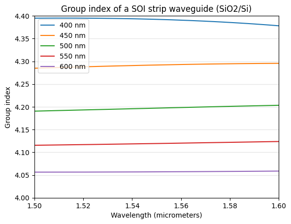

Group Index#
Group Index of Silicon Waveguide#
This function returns group index of the fundamental mode for given waveguide width and wavelength.
Group Index is calculated using the following equation where \(n_\mathrm{eff}\) is the effective index, \(n_g\) is the group index, \(w\) is the waveguide width, and \(\lambda\) is the wavelength.
\[n_g(w, \lambda) = n_\mathrm{eff}(w, \lambda) - \lambda \cdot \frac{\partial n_\mathrm{eff}(w, \lambda)}{\partial \lambda}\]
This is what is implemented in the built-in function ng.
[1]:
import sipkit
import matplotlib.pyplot as plt
from jax import numpy as jnp
from jax import numpy as jnp
%matplotlib inline
wavelengths = jnp.linspace(1.5, 1.6, 1000)
group_index_400 = jnp.array([sipkit.ng(0.4, wl) for wl in wavelengths])
group_index_450 = jnp.array([sipkit.ng(0.45, wl) for wl in wavelengths])
group_index_500 = jnp.array([sipkit.ng(0.5, wl) for wl in wavelengths])
group_index_550 = jnp.array([sipkit.ng(0.55, wl) for wl in wavelengths])
group_index_600 = jnp.array([sipkit.ng(0.6, wl) for wl in wavelengths])
[2]:
plt.plot(wavelengths, group_index_400, label='400 nm')
plt.plot(wavelengths, group_index_450, label='450 nm')
plt.plot(wavelengths, group_index_500, label='500 nm')
plt.plot(wavelengths, group_index_550, label='550 nm')
plt.plot(wavelengths, group_index_600, label='600 nm')
plt.legend()
plt.xlabel('Wavelength (micrometers)')
plt.ylabel('Group index')
plt.title('Group index of a SOI strip waveguide (SiO2/Si)')
plt.ylim(4.0, 4.4)
plt.xlim(1.5, 1.6)
plt.grid(axis='y', color='0.9', linestyle='-', linewidth=1)
plt.show()

Free Spectral Range (FSR)#
As an example, the group index can be used to calculate the free spectral range (FSR) of a resonator, the spectral spacing between two consecutive resonant wavelengths. The FSR can be expressed as the following equation where \(L\) is the round-trip cavity length, \(\lambda\) is the wavelength, and \(n_g\) is the group index.
\[FSR = \frac{\lambda^2}{n_{g}L}\]
[3]:
def fsr(width, wavelength, length):
"""
Calculates the free spectral range of a waveguide. This is the distance
between two consecutive resonances.
:param width: Waveguide width in micrometers.
:param wavelength: Wavelength in micrometers.
:param length: Propagation length in micrometers.
:return: Free spectral range in micrometers.
"""
return wavelength ** 2 / (sipkit.ng(width, wavelength) * length)
my_fsr = fsr(width=0.5, wavelength=1.55, length=30)
my_fsr
[3]:
Array(0.0190803, dtype=float64)